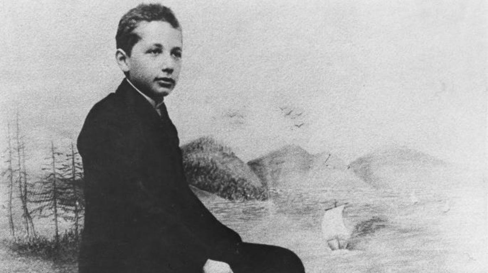

Albert Einstein
December 10, 2022
• 124 lIkes
• 12 replies
• 3 mentions
Last updated December 12, 2022
Albert Einstein (1879 - 1955) was a renowned theoretical physicist and mathematician who is widely considered one of the most influential scientists of the 20th century. He is best known for his groundbreaking theories of relativity and his famous equation E=mc², which describes the relationship between mass and energy.
Childhood and early life
Albert Einstein was born in Ulm, Germany, on March 14, 1879. As a child, he showed an early interest in science and mathematics and was fascinated by the workings of nature. However, he struggled in school and often clashed with his teachers due to his nonconformist personality and reluctance to follow traditional methods of teaching After moving to Switzerland at age 16, he eventually gained admittance to the Swiss Federal Polytechnic School in Zurich, where he excelled in physics and mathematics and began laying the groundwork for his later groundbreaking work in theoretical physics.
Hermann Einstein, Albert's father, was a businessman and engineer who owned an electrical equipment company. He encouraged his son's interest in science and mathematics, but was disappointed when Albert pursued a career in academia rather than joining the family business.
High School Education
Albert Einstein's high school education began at the Luitpold Gymnasium in Munich, Germany in 1886, where he received a traditional education in Latin, Greek, mathematics, and science. However, he was not fond of the school's strict and authoritarian approach to education, and he often clashed with his teachers. In 1894, at the age of 15, Einstein's family moved to Italy, and he continued his education at the Aarau Cantonal School in Switzerland. There, he found a more supportive and nurturing environment, and he excelled in mathematics and physics. In 1896, Einstein graduated from the Aarau Cantonal School with a diploma in mathematics and physics, laying the foundation for his future scientific achievements.
After completing his high school education, Einstein applied to the Swiss Federal Institute of Technology in Zurich, but failed the entrance exam on his first attempt. He spent a year studying at a Swiss school to improve his knowledge and skills, and then successfully passed the entrance exam in 1896. Einstein graduated from the institute in 1900 with a degree in physics and mathematics, setting him on the path to become one of the most famous scientists in history.

Einstein Servings
Albert Einstein is widely regarded as one of the greatest scientists of all time, with his work on relativity and quantum mechanics shaping our understanding of the universe. Some of his servings for Physics are listed below:
- Theory of General Relativity
- E=mc²
- Law of the photoelectric effect
- Brownian Motion
- Special Theory of Relativity
- Unified Field Theory
- Humanitarian and Political Activism
Albert Einstein is widely regarded as one of the greatest scientists of all time, with his work on relativity and quantum mechanics shaping our understanding of the universe. His contributions to science and his activism on social and political issues have made him an enduring cultural icon.
Albert Einstein is considered one of the most influential scientists of the 20th century, with his work fundamentally transforming the way we think about the universe. His research and discoveries in the fields of theoretical physics and mathematics were groundbreaking and have had far-reaching implications in the world of science. His famous theory of relativity transformed our understanding of space, time, and gravity, and his equation E=mc², which shows the equivalence of mass and energy, laid the foundation for nuclear physics.
In addition to his scientific achievements, Einstein was also a passionate advocate for social justice and peace. He spoke out against racism, fascism, and war, and was a vocal critic of the use of atomic bombs. Einstein also served as a founding member of the International Rescue Committee, which provides humanitarian aid and assistance to refugees and displaced persons. His contributions to science and society have had a profound impact on the world and continue to inspire and influence generations of scientists and activists today.